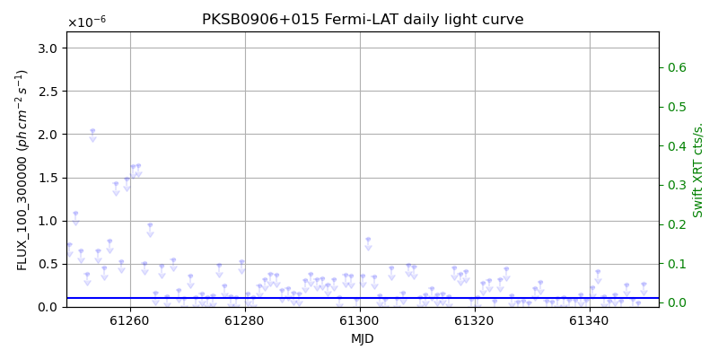
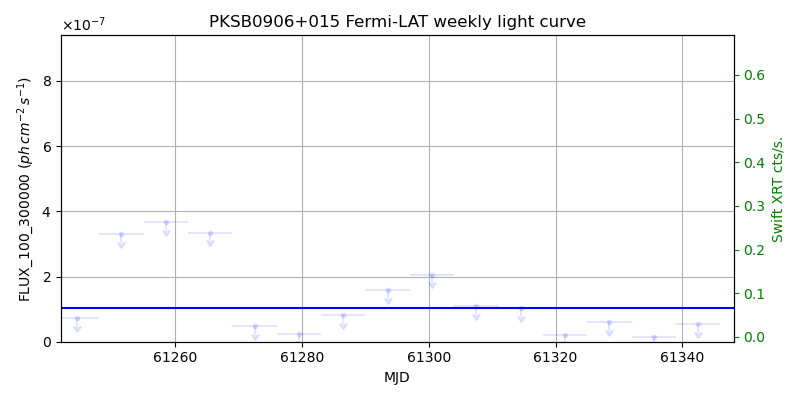
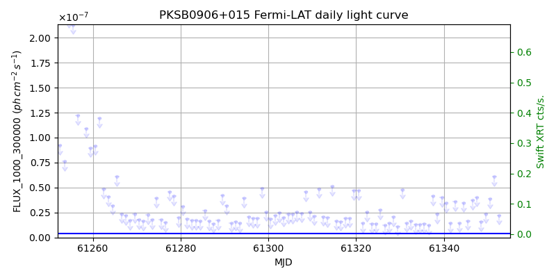
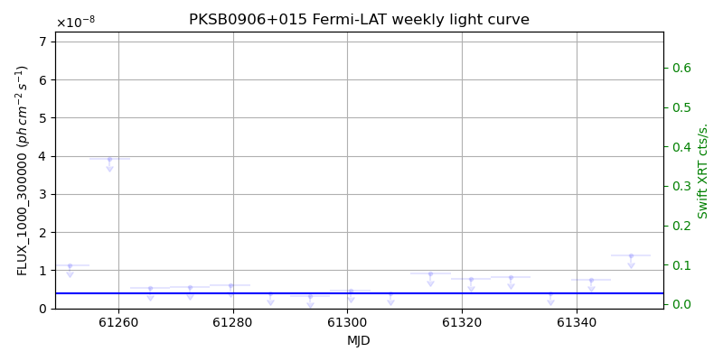

LAT Lightcurve site: https://fermi.gsfc.nasa.gov/ssc/data/access/lat/msl_lc/source/PKS_B0906p015
Swift site: https://www.swift.psu.edu/monitoring/source.php?source=PKSB0906+015
NED: Query
Time of last update of this page: UT: 2026-11-06 16:20 (MJD: 61350.681)
| Property | Value |
|---|---|
| R.A. | 9:09:10.08 |
| Dec. | 1:21:36.0 |
| z | 1.023 |
| 3FGL SpectrumType | LogParabola |
| 3FGL PL Index | |
| 3FGL Flux_100_300000 | 1.03e-07 1 / (s cm2) |
| 3FGL Flux_1000_300000 | 4.01e-09 1 / (s cm2) |
| 3FGL Flux >200 GeV | 2.34e-13 1 / (s cm2) |
| 3FGL Extrap. Crab >200 GeV | 0.00 |
| 3FGL Flux After EBL Absorption >200GeV | 4.49e-15 1 / (s cm2) |
| 3FGL EBL Crab Fraction >200GeV | 0.00 |

| MJD | dMJD | Flux | dFlux | Frac3FGL | FracCrab>200GeV | EBLFracCrab>200GeV |
|---|---|---|---|---|---|---|
| 61345.50 | 0.50 | 6.75e-08 | 0.00e+00 | 0.00 | 0.00 | 0.00 |
| 61346.50 | 0.50 | 2.60e-07 | 0.00e+00 | 0.00 | 0.00 | 0.00 |
| 61347.50 | 0.50 | 8.85e-08 | 0.00e+00 | 0.00 | 0.00 | 0.00 |
| 61348.50 | 0.50 | 4.63e-08 | 0.00e+00 | 0.00 | 0.00 | 0.00 |
| 61349.50 | 0.50 | 2.71e-07 | 0.00e+00 | 0.00 | 0.00 | 0.00 |

| MJD | dMJD | Flux | dFlux | Frac3FGL | FracCrab>200GeV | EBLFracCrab>200GeV |
|---|---|---|---|---|---|---|
| 61314.50 | 3.50 | 1.03e-07 | 0.00e+00 | 0.00 | 0.00 | 0.00 |
| 61321.50 | 3.50 | 2.15e-08 | 0.00e+00 | 0.00 | 0.00 | 0.00 |
| 61328.50 | 3.50 | 6.03e-08 | 0.00e+00 | 0.00 | 0.00 | 0.00 |
| 61335.50 | 3.50 | 1.51e-08 | 0.00e+00 | 0.00 | 0.00 | 0.00 |
| 61342.50 | 3.50 | 5.47e-08 | 0.00e+00 | 0.00 | 0.00 | 0.00 |

| MJD | dMJD | Flux | dFlux | Frac3FGL | FracCrab>200GeV | EBLFracCrab>200GeV |
|---|---|---|---|---|---|---|
| 61345.50 | 0.50 | 1.66e-08 | 0.00e+00 | 0.00 | 0.00 | 0.00 |
| 61346.50 | 0.50 | 3.72e-08 | 0.00e+00 | 0.00 | 0.00 | 0.00 |
| 61347.50 | 0.50 | 4.04e-08 | 0.00e+00 | 0.00 | 0.00 | 0.00 |
| 61348.50 | 0.50 | 1.58e-08 | 0.00e+00 | 0.00 | 0.00 | 0.00 |
| 61349.50 | 0.50 | 2.36e-08 | 0.00e+00 | 0.00 | 0.00 | 0.00 |

| MJD | dMJD | Flux | dFlux | Frac3FGL | FracCrab>200GeV | EBLFracCrab>200GeV |
|---|---|---|---|---|---|---|
| 61314.50 | 3.50 | 9.20e-09 | 0.00e+00 | 0.00 | 0.00 | 0.00 |
| 61321.50 | 3.50 | 7.66e-09 | 0.00e+00 | 0.00 | 0.00 | 0.00 |
| 61328.50 | 3.50 | 8.27e-09 | 0.00e+00 | 0.00 | 0.00 | 0.00 |
| 61335.50 | 3.50 | 4.04e-09 | 0.00e+00 | 0.00 | 0.00 | 0.00 |
| 61342.50 | 3.50 | 7.56e-09 | 0.00e+00 | 0.00 | 0.00 | 0.00 |
--------------------------------------------------------- Using user-supplied coords: 9:09:10.08 1:21:36.0 2000 --------------------------------------------------------- FLWO UT night of: 2026-11-07 Local Sid. @ Midnight: 02:42 Sunset (-15.0) (local, UT): 18:39 01:39 Sunrise (-15.0) (local, UT): 05:36 12:36 Moonrise (local, UT): 05:16 12:16 Moonset (local, UT): Moon phase: 0.04 --------------------------------------------------------- AzTime LSID UT Obj_el Obj_az Mn_el Mn_az Sep. --------------------------------------------------------- 18:39 21:20 01:39 -57.0 4.5 -35.5 278.9 58.6 19:09 21:50 02:09 -55.7 17.9 -41.6 283.5 58.9 19:39 22:20 02:39 -53.1 30.0 -47.5 288.8 59.2 20:09 22:50 03:09 -49.4 40.5 -53.3 295.3 59.6 20:39 23:20 03:39 -44.9 49.4 -58.7 303.4 59.9 21:09 23:50 04:09 -39.8 56.8 -63.5 313.9 60.2 21:39 00:20 04:39 -34.2 63.2 -67.5 328.0 60.6 22:09 00:50 05:09 -28.4 68.7 -70.0 346.2 60.9 22:39 01:20 05:39 -22.3 73.7 -70.5 6.9 61.3 23:09 01:51 06:09 -16.1 78.2 -68.8 26.6 61.6 23:39 02:21 06:39 -9.8 82.4 -65.4 42.5 62.0 00:09 02:51 07:09 -2.1 86.4 -60.9 54.4 62.3 00:39 03:21 07:39 3.2 90.3 -55.8 63.5 62.7 01:09 03:51 08:09 9.4 94.3 -50.2 70.6 63.0 01:39 04:21 08:39 15.7 98.4 -44.4 76.4 63.3 02:09 04:51 09:09 22.0 102.8 -38.4 81.4 63.7 02:39 05:21 09:39 28.2 107.5 -32.4 85.8 64.0 03:09 05:51 10:09 34.2 112.8 -26.3 89.9 64.3 03:39 06:21 10:39 39.9 118.9 -20.2 93.7 64.6 04:09 06:51 11:09 45.3 126.0 -14.2 97.5 64.8 04:39 07:21 11:39 50.2 134.5 -8.1 101.2 65.1 05:09 07:52 12:09 54.4 144.8 -1.2 105.0 65.4 05:36 08:19 12:36 57.3 155.8 3.4 108.6 65.6 --------------------------------------------------------- Dark hours >55 deg.: 0.02 srcstart (UT): 2026-11-07 12:14 srcend (UT): 2026-11-07 12:15